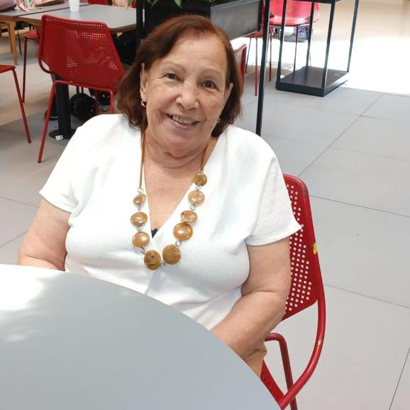
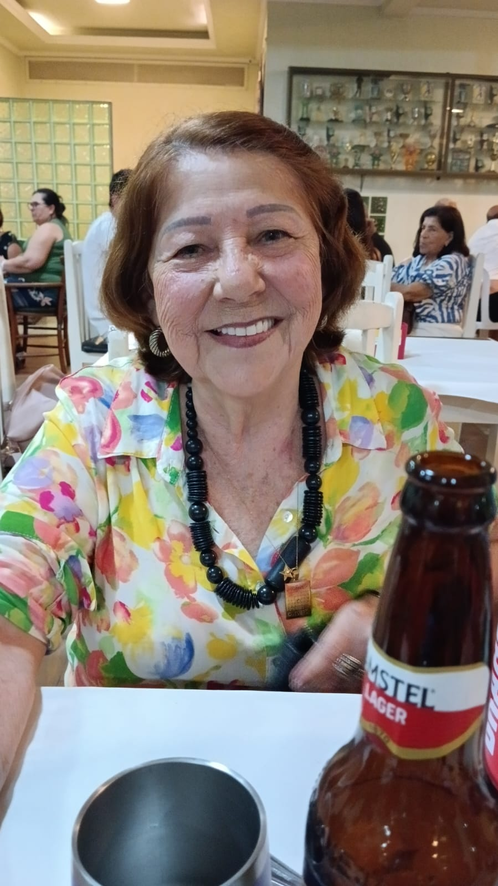
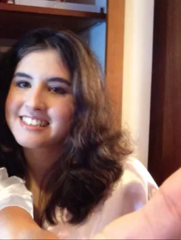

Ninguém chega a lugar nenhum sozinho. Eu cheguei até aqui porque quatro mulheres caminharam comigo.

Vó, foi você quem me criou e me educou. Cada valor que eu carrego, cada "obrigado", "por favor" e cada escolha certa que eu faço tem um pouco das suas mãos. Você me deu o começo de tudo. O homem que eu sou hoje começou a ser construído na sua casa, com o seu cuidado e a sua paciência. Obrigado pelos valores que você me ensinou.
Mãe, a gente nem sempre se entendeu, e tudo bem. Eu sei que a sua história não foi fácil. Mesmo assim, você nunca deixou de me amar e nunca desistiu de ser minha mãe. E esse seu bom humor, que deixa tudo mais leve, é uma das coisas que eu mais amo em você. Você me deu o presente mais importante que alguém poderia me dar: a fé em Deus. Isso eu vou levar para a vida toda e ensinar aos meus filhos. Assim, o seu amor vai atravessar gerações. Você provou, sim, que é uma boa mãe.

Tia Nanci, você é uma das pessoas mais fortes que eu conheço. É independente, sabe o que quer e vai atrás, e é você quem me inspira a ser assim também. A gente pensa parecido e se dá bem de um jeito que não precisa de explicação. Mesmo sem nos vermos sempre, quando a gente se encontra é como se nunca tivesse passado tempo nenhum. Obrigado por ser exemplo e parceria.

Carol, você é a pessoa que sempre está lá. Nos meus piores dias, você não mediu esforços para me fazer sentir melhor. Nos melhores, estava ao meu lado comemorando. Já são mais de dez anos juntos, e a gente continua apaixonado como dois namorados que acabaram de começar. Ainda não temos papel assinado, mas no meu coração você já é minha esposa há muito tempo. Você é a pessoa mais importante da minha vida. Obrigado por me escolher todos os dias.